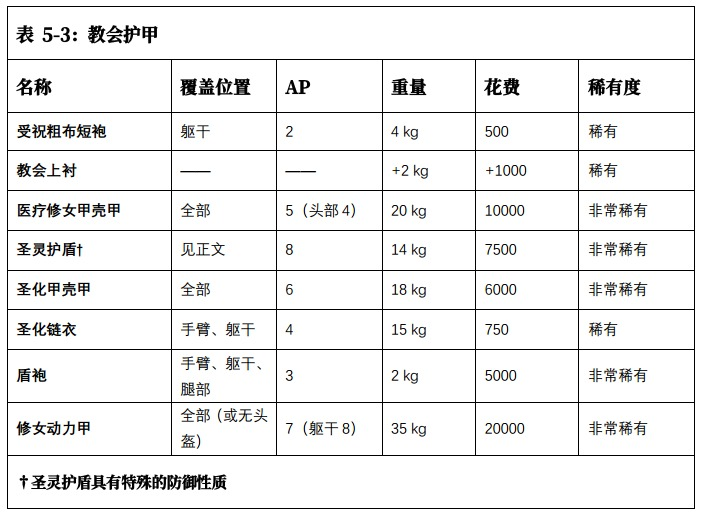
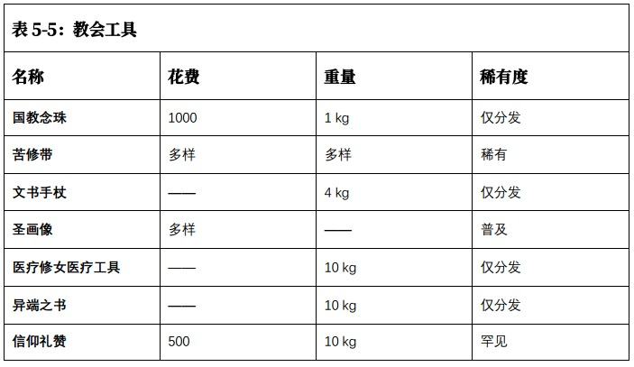
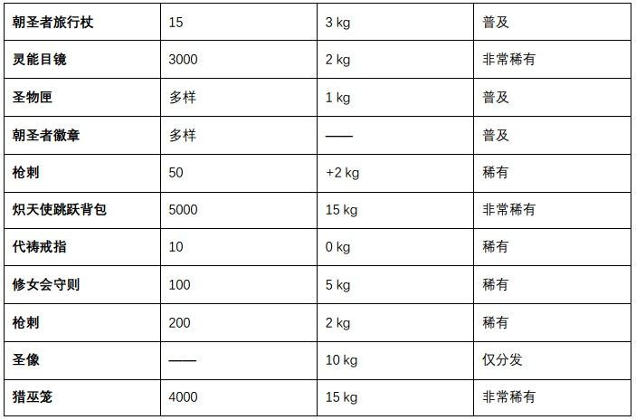

“如果你有罪，这只会让你痛苦。”
——告解神父 希尔德布拉斯（Hildebrax）
教会的道具就像其神职人员和仆人一样多种多样。在无数个世界中，红衣主教和修道院长必须照看他们的信徒，引导他们遵循帝皇的神圣计划，他们需要各种专门设备来完成他们的任务。
修女会的每个成员都在脖子上或腰上戴着一条国教念珠。每颗精金念珠都提醒着一次忏悔行为，但对于经验丰富的修女来说，每颗念珠可能代表着更多的忏悔行为。
公开展示国教念珠的修女可以重新进行任何失败的吸引力检定。这些吸引力检定针对的是地位相等或较低的国教成员(由 GM 决定)。
这些服装和其他配饰被设计用于在穿着时引起一定程度的不适。例如由胚布及/或粗糙布料制成的衬衫、 长串的重链、 用粗绳和未刮制的兽皮或粗布做成的腰带、 或用小钩子装饰的金属链环吊袜带。衬衫通常穿在普通衣服里，而其他形式的苦修带则系在腰上或四肢上。
苦修带的目的是提醒佩戴者作为帝国公民所承担的责任，以及圣徒和神皇本人所承受的考验和磨难。 这是一种惩罚肉体的形式， 穿戴苦修带是为了净化灵魂， 并用作苦修。 苦修带在蛮荒世界很常见，奇怪的是在许多巢都世界的贵族中也很常见。 不过后者似乎认为穿戴苦修带（通常以衬衫的形式）是一种骄傲，而不是谦卑。
然而， 苦修带确实有助于集中角色的注意力， 提醒他对神皇的忠诚。在抵抗恐惧、 吸引力、恐吓或其他社会操纵的意志检定中获得 +10 的加值。然而，如果角色用过多的锁链和钩子来装饰自己，或者佩戴的时间超过了规定的时间（通常是其坚韧加值的两倍），则必须通过坚韧检定，否则将遭受 1 级虚弱。
许多文书修女都会携带文书手杖。上面装有宣讲器和录音装置。它足够坚固，可以在战斗中作为权杖使用，并在理解远处声音时给予 +10 的加值
圣画像是一幅肖像，通常是帝皇，但也有圣人和帝国的其他名人。它们有各式尺寸和风格，从带锁盖的小浮雕，到在桌面和祭坛上公开展示的大型三联画。圣画像在整个星区大量出售，于当地民兵中最为常见，他们经常将圣画像安装在武器和车辆上。
医院修女会为其修女们配备的战场医疗工具，是除阿斯塔特修会的药剂师以外最好的。这些工具包括各种圣油、软膏、手术工具和消毒剂，以帮助那些在战斗中受伤的人。
医疗修女医疗工具视作一个医疗包， 内含 2 剂解毒剂和 2 剂兴奋剂。此外， 医疗修女可能会截去受损肢体（或剩余肢体），并注射混合药物来提供救助， 以及为伤口消毒。截肢需要进行困难的（-10） 医疗检定。如果成功，患者将失去肢体，但会消除肢体损伤引起的所有其他影响，包括虚弱、失血，并（根据 GM 的判断） 恢复因失去肢体而损失的 1d5 承伤。
收录了数千名审判庭猎巫人的著作、哲学、思考、言论和智慧， 《异端之书》 是各形式异端的权威指南。 它详细介绍了许多臭名昭著的异端邪教的结构、活动和性质，以及如何发现和摧毁这些邪教，还介绍了如何识别萌芽中的异端邪说、异端常用的标志和符号，以及各种异端信仰和箴言。
不出所料，这本巨著是神圣审判庭严密保守的秘密，他们意识到《异端之书》不仅是一本了解异端本质的绝佳指南，也是一本关于如何建立异端邪教、 并保持其隐秘性的完美入门书。这本书只发给那些已经证明了自己的忠诚和奉献精神的猎巫人，即便如此，书的主人也可能会被要求随时交出这本书。
《异端之书》 通常是一本巨大的装甲书。封面外侧镶嵌着国教标志，里面有一把根据拥有者基因结构编码的锁。在涉及禁忌知识（邪教、异端）的调查检定中，《异端之书》提供 +20 的加值。
这些书籍形式多样，有手写羊皮纸的巨型书卷，也有小巧的数据板。它们包含国教教义，特别强调圣歌和赞美诗。《信仰礼赞》 的节本（主要集中于祷文） 是国教传道士的常见持有物。
一本完整的《信仰礼赞》可在涉及常识（帝国国教）和学术知识（国教教义）的调查检定中获得 +20 加成。而《信仰礼赞》 的节本只能提供 +10 加成。
朝圣者旅行杖由各种材料制成（例如蛮荒世界的木材， 或铸造世界的挤压聚合物），既是工具，也是武器，还是朝圣者献身神皇和教会的象征。旅行杖一般有 2 米长，顶端约半米处有一个小钩子，用来挂上徽章、护身符、标志或其他物品，表明朝圣者打算去哪个神殿世界。
来自锻造世界和巢都世界的朝圣者经常会在手杖上安装小型通讯器，无休止地重复向神皇和他的圣徒们吟唱、祈祷和献歌。
作为一种成像面罩， 灵能目镜的设计目的是将灵能者发出的辐射增强为可视形式。 使用者可以利用它来侦测灵能者（也只能侦测灵能者），就好像使用者拥有+20 的灵能感应技能一样。使用灵能目镜需要一个完整动作。
这些徽章是一个人或一件事的形象代表，在许多神殿世界都有制造，数量难以计数。最常见的徽章是简单的、大量生产的徽章，不过有钱人也可以定制更精致的徽章。最好的徽章内置小玻璃瓶，里面装有圣水、圣油、行星尘埃或类似材料。
圣物匣的形式各样， 例如盒子、 棺材和箱子，用来装圣物（无论真假）、符咒或真实圣物的全息图像。质量和价格是相对的——最常见的圣物匣制作廉价，里面只有一个全息图像、模型或绘画，而用来盛放经鉴定的圣物的圣物匣则动辄数千个王座。
设计成扭曲的形状，用于在拨弄时引起轻微不适，代祷戒指被视为一种护身符。
这本书汇集了专著、祷文和各种神圣指令， 在关于帝国国教、异端、变种人或修女会的常识检定中，这本书提供+10 加值。
这是一种重型尖刺刀片， 战斗修女经常将其安装在爆弹枪上，以便在不切换武器的情况下进行近战攻击。 枪刺被安装在爆弹枪上时， 可在近战中将它视作一把斧头。

要求：航行（跳跃背包）， 修女动力甲
这款跳跃背包采用的技术与星际战士所用背包相同， 且更加流线型和风格化。这种设计还能让战斗修女形似复仇天使。战斗修女的积极使用使这一设计发挥了巨大作用。除了常规使用外，还能让炽天使进行横向移动，在不脱离掩体的情况下，进行再部署。在朝圣者休憩星的再祝圣仪式上经常能看见这样的使用方式。
跳跃背包需要 航行（跳跃背包） 技能才能有效操作。炽天使跳跃背包允许从任何高度安全、有引导地落下，并可进行任意次数的短距离跳跃。这种跳跃可使角色的基础移动速度加倍。
她必须在回合结束前着陆。或者背包可以使用最大推力， 复制飞行（1 2）特质长达 1 分钟，之后涡轮需要 1 分钟时间来冷却。
神圣审判庭拥有的一些最珍贵的工艺品。 圣像是教会的神圣象征，曾由帝国的圣人携带，或由圣人的骸骨制成。只有在异端和亚空间势力最猖獗的时候，才会在极少数情况下出现， 圣像通常会出现在战斗修女队伍的最前列。 圣像被认为是教会和神皇信仰最纯粹的象征之一，仅仅看到圣像就足以振奋附近盟友的精神和战斗热情。
每当一个角色在圣像 20 米范围内消耗命运点，只要投掷的结果是 8、 9 或 10，他就会立即恢复命运点。腐化超过 20 的角色无法从该效果中受益。
猎巫笼是维纳里斯星球上的一种古老装置，用于控制那些本来会被杀死，但由于极端情况而需要留活口的灵能者。这个简单的铁盒子套在灵能者的头上，限制他的视觉和听觉。刻在里面的符文会阻止灵能者有效地使用他的邪恶天赋。此外， 猎巫笼上还有数十个圆环和尖刺，只要拍打铁笼或拉动环上的绳索，就能轻松控制灵能者。
戴上猎巫笼的灵能者，他的有效灵能等级会被扣除 4 ，在所有专注检定中受到 -40 的惩罚，并被视为盲人和聋子。

对于那些罪行尚未严重到需要立即处决的异端分子，等待着他们的将是另一种命运：成为鞭笞机仆。鞭笞机仆会经历一系列漫长的外科改造程序，包括肌肉移植、战斗药物注射以及植入机械武器。同时，受改造者的心智也会被重新调整，将其转变为一台只知摧毁帝皇之敌的嗜血杀戮机器。
通常，鞭笞机仆通过一个密封的镇静头盔来保持平静。头盔会用神圣的影像和圣歌填充鞭笞机仆的感官，使其对外界刺激几乎毫无反应。然而，一旦说出正确的激活词，感官输入便会停止，同时一剂混合了战斗药物和兴奋剂的混合物会被泵入鞭笞机仆体内，将这台一度被动的改造人转变为可怕且无畏的战士，其存在只为毁灭眼前的一切。使用一个停用词则会使鞭笞机仆关机并恢复其被动状态。
鞭笞机仆的数据表同时呈现了被动模式和主动模式。在一种模式下遭受的伤害会延续到另一种模式。因此，主动模式下的鞭笞机仆有可能在恢复被动模式后，因承受了太多伤害而倒地不起。
移动：1/2/3/6 承伤：12"
技能：无。
天赋：无所畏惧。
特性：无视觉，机械（3） ，触发词。
护甲（机械） ：头部 3，手臂 3，躯干 3，腿部 3。
装备：内置通讯微珠（接收/传达指令） 。
移动：8/16/24/48 承伤：25"
技能：警觉（Per）+10
天赋：双巧手，野蛮冲锋，盲斗，格斗大师，猛力打击，命硬，双重打击，无所畏惧，狂热袭击，棘手目标，宿敌（异端），铁头，闪电攻击，闪电反射，近战武器训练（链锯武器，原始武器，动力武器，震击武器），快速反应，双武器攻击。
特性：恐惧 1，机械（3） ，程式化本能，触发词，超自然力量（x2） ，超自然敏捷（x2），超自然感官，超自然速度。
护甲（机械） ：头部 3，手臂 3，躯干 3，腿部 3。
武器：鞭笞机仆的双臂末端均为植入式武器。从以下选择一种：链锯斧（1d10+14 R；破甲 2；撕裂） ，切割爪（1d10+10 R；破甲 0；迅捷，原始） ，电击连枷（1d10+12 I；破甲 0；灵活，震击） ，气动锄（Pneumattocks）（2d10+10 I；破甲 3；原始，不平衡，笨重） ，或动力剑（1d10+13 E；破甲 6；动力场）。
装备：内置通讯微珠（接收/传达指令） 。
无视觉：有些异端行径是如此邪恶，以至于仅仅是目睹就足以玷污自身。鞭笞机仆便是其中之一。改造过程移除了其双眼，代之以一套鸟卜阵列，该阵列仅在鞭笞机仆处于主动模式时激活。处于被动模式时，其密封头盔使其无法以任何方式视物。
触发词：鞭笞机仆将保持被动模式，直到接收到特定的激活词或短语，这将激活其战斗程序。随后，鞭笞机仆会从被动模式切换到主动模式数据，并保持活跃，直到接收到第二个触发词或短语。触发词可以说出，可以通过通讯器传输，也可以使用传心灵能发送。
程式化本能：鞭笞机仆战斗时处于狂暴状态，在首次进入战斗时必须使用其野蛮冲锋天赋（如果可能的话）。一旦进入近战，它会使用其闪电攻击天赋。被指令针对特定对手的鞭笞机仆会无视所有其他人，只攻击该目标。
超自然感官：鞭笞机仆的鸟卜阵列使其能够“看见”30 米范围内的物体和人，无视黑暗以及除最密集障碍物外的所有遮挡。
注意：当鞭笞机仆返回被动模式时，伤害会延续。如果此伤害超过 12 点（其被动模式的总承伤），它不会被摧毁，但必须休息并接受修复，超出 12 的每点伤害（包括致命伤）需要 1 小时的修复时间。
配备着一簇机械臂，每条手臂末端装有各种书写工具的文书机仆，几乎能够抄写交给它们的任何文件。它们还能听写口头话语，常被用来保存布道和演讲内容，以及记录信件、命令和规章的口述。审判庭的许多高级成员身边都至少有一个文书机仆，而大型修道院和寺院则可能拥有数百个，它们通常忙于复制和保存古代文本。
移动：1/2/3/6 承伤：12
技能：阅读，生计（抄写员） （Int +10）
天赋：天赋异禀（生计）
特性：机械（4） ，多臂，程式化本能。
护甲（机械） ：头部 4，手臂 4，躯干 4，腿部 4。
装备：多支自动书写笔，内置通讯微珠（接收/传达指令） 。
程式化本能：文书机仆没有战斗程序，它们那些蜘蛛般的肢体除了握笔或翻书外无法用于任何其他事情。如果受到攻击（或者它们周围发生战斗），它们会继续按要求工作，除非损坏严重到无法继续或被摧毁。
作为一种轻型机仆单元，唱诗奴工遍布帝国的教堂和神龛世界。大多数被配置为歌唱（在某些极端情况下，只唱一个音符），然后被组建成从几十到上千人不等规模的唱诗班。其他国教奴工可能被设定为重复吟唱神圣的圣歌或祷文，摆动香炉，转动经轮，挥舞经幡，或演奏乐器（如吹响神圣的号角或敲鼓）。
移动：1/2/3/6 承伤：10
技能：表演（乐师或歌手） （Fel +10）或无技能。
天赋：无。
特性：机械（2） ，程式化本能。
武器：拳头（1d5 I；原始） 。
护甲（机械） ：头部 2，手臂 2，躯干 2，腿部 2。
装备：内置通讯微珠（接收/传达指令） 。
程式化本能：唱诗奴工以其完全献身于自身程序而闻名。除非接到其他指令，否则它们不会攻击入侵者或参与暴力，并且实际上会无视针对它们或其唱诗班同伴的任何攻击。因此，如果遭到射击或其他攻击，唱诗班机仆通常会继续履行其职责，直到完全瘫痪。
尽管大多数异端会被直接处决，还有一些被制成了鞭笞机仆，但仍有一些人，连这些下场都不足以构成恰当的惩罚。那些已被判处死刑，却真心渴望为自己罪行与罪孽赎罪的异端，可能会被交给赎罪引擎。忏悔的驾驶员与引擎直接硬线连接，深知唯有死亡才能让自己获得解脱，因此他们常常冲锋在战斗的最前沿，既寻找敌人交战，也寻求终结自己的痛苦。据悉，有些虔诚的崇拜者甚至会自愿接受这种命运，以求净化自身（无论真实还是臆想的）罪孽，或在为审判庭和神皇的服务中死去。
赎罪引擎是庞大的双足机仆类装置，每条肢体上都装备有一柄重型喷火器和一把链锯斧。它们在战斗中极具攻击性，是修女会青睐的武器，她们常部署三台或更多引擎来冲散暴徒乌合之众，或进攻固守阵地。
移动：8/16/24/48 承伤：30
技能：警觉（Per）+10
天赋：双巧手，基本武器训练（火焰武器） ，野蛮冲锋，净化之火，命硬，无所畏惧，坚忍体魄，重型武器训练（火焰武器） ，铁头，近战武器训练（链锯武器） ，双武器攻击（射击），双武器攻击（格斗）。
特性：装甲植入，自动稳定，黑暗视觉，恐惧 1，机械（5），体型（大型），超自然力量（x2），超自然坚韧（x2），超自然速度。
护甲（机械） ：头部 7，手臂 7，躯干 7，腿部 7。
武器：徒手（1d5+7 I；原始）以及每条手臂上配有：链锯斧（1d10+14 R；破甲 3；撕裂），重型喷火器（30m；S/-/- ；2d10+4 E；破甲 4；弹容 10；装填：完整；火焰）。
装备：内置通讯微珠（接收/传达指令），每柄重型喷火器备有三个弹夹量的燃料箱，瞄准系统（视为红点激光瞄准镜）。
作为智天使机仆的一种变体，自鞭天使被设计用来对个体施加持续的肉体鞭挞。这种鞭挞通常以刺鞭（Scoriada）形式达成，但自鞭天使也可能被设定成别的模式，例如拿走某人的食物、打断他的睡眠、不停嚎叫、拉扯他的衣服和头发，或以其他方式进行无休止的骚扰行为。在极端情况下，自鞭天使可以被设定为造成实际的身体伤害，通常是用小刀切割目标，或用更残酷的刑鞭（Excoriae）替换标准刺鞭。然而，国教对此类做法持否定态度。
一种变体自鞭天使由穿戴在背部的束具组成。束具上装有一只或多只手臂，每只手臂由简单的齿轮机构和电池驱动，用刺鞭抽打穿戴者。如果需要，该束具也可以充当智天使机仆。
移动：2/4/6/12 承伤：3
技能：警觉（Per） ，躲藏（Ag +10），闪避（Ag），表演（歌手） （Int +10）或生计（抄写员，裁缝，或服侍者）（Fel +20）。
天赋：近战武器训练（刺鞭） ，天赋异禀（表演或生计）。
特性：命令，飞行 5，机械（1） ，程式化本能，体型（小型） 。
护甲（机械） ：头部 1，手臂 1，躯干 1，腿部 1。
武器：拳头（1d5-2 I；原始） ，刺鞭。
命令：自鞭天使作为智天使机仆的一种形式，可以被命令执行任何它们理解并预设好的任务（例如：“铺开我的法衣”，“抄写那份文件”，“高举祈祷卷轴”，“开始肉体苦修”等等） 。
程式化本能：自鞭天使虽然会按照其程序施加肉体鞭挞，但除非得到特别命令，否则它们不会攻击或参与暴力。与普通智天使机仆不同，如果受到攻击，自鞭天使不会逃跑，而是会尝试闪避——前提是该攻击是对它们施加鞭挞程序的反应。如果遭到射击或用近战武器攻击，自鞭天使会立刻全速逃离。根据其程序设计，自鞭天使可能持续不断地使用刺鞭，也可能潜伏在周围，等待某人试图进食、穿衣或从事需要一定专注力的活动时，才突然开始其肉体鞭挞的例行程序。
| 名称 | 花费 | 稀有度 |
|---|---|---|
| 鞭笞机仆 | 25,000 | 罕见 |
| 文书机仆 | 2,500 | 稀有 |
| 国教唱诗奴工 | 1,000 | 稀有 |
| 赎罪引擎 | 40,000 | 仅配发 |
| 自鞭天使 | 3,000 | 罕见 |
国教为帝国公民提供众多服务，包括祝福婚姻、听取告解、尸体驱邪以防止恶魔影响，以及指导信徒对其罪行进行恰当的忏悔。对侍僧可能有用的服务包括以下这些：
受洗者沐浴在圣水中，并涂上圣香和/或圣油。这种身体与精神的象征性净化，能使角色下一次获得的堕落点减少 1 点。
武器也可以像人一样接受“洗礼”。在此仪式中，武器会用神圣的机油清洁、开刃（如果适用），然后进行祈祷。这不仅有助于延长武器的使用寿命，还能使武器在接下来的一场遭遇战中所造成的任何伤害被视为具有“神圣”属性。
远程武器祝圣的过程与近战武器类似。在武器被使用的下一场遭遇战中，此仪式将使使用者忽略第一次出现的卡壳结果，并在对抗恶魔或灵能者时，其使用该武器的射击技能检定获得+10 加值。
一种更简短的洗礼形式，个人祝圣包括一段时间的祈祷，随后进行一个简单的涂油仪式。受到如此祝福的角色拥有更纯净的自我和目标感，可以在其下一次恐惧检定中获得+10 加值。
这是一种群体祝福，参与者会进行集体祈祷，随后是一段简短的布道，阐明角色任务对国教的重要性。这种对职责与信仰的肯定，使得角色在旅途中可能获得的第一级虚弱被忽略。
角色与一位国教神职人员共处，在一场私密交谈中坦白自己的罪孽（无论真实还是臆想）。神职人员随后会指定恰当的苦修（例如罚款、背诵祷文、公共服务，甚至肉体鞭挞）。一旦完成，角色便重申了他对神皇的信仰，使其下一次获得的失心点减少 1 点。
此仪式能够洗礼和祝福一柄品质为优秀或更佳的近战武器，与一系列延长的祈祷及类似仪式结合起来。其结果是一柄能够伤害恶魔和亚空间生物的武器或弹药。因此，这些武器造成的伤害被视为“神圣”伤害，对某些恶魔和亚空间实体具有特定效果（如其描述中所述） 。
对于远程武器，圣化的对象不是武器本身，而是其所用的弹药。这可以对爆弹武器、火焰武器和实弹武器执行。其效果与圣化近战武器相同。每次执行此服务，可以圣化一次装填量的弹药。
此过程只能由国教高级成员（6 级或更高等级的牧师）完成。
侍僧小组在调查期间通常会有神职人员陪同，这些神职人员可以为他所陪同的侍僧执行国教服务。要执行一项服务，神职人员需要花费该服务的材料成本，并进行一次难度等级如表 5-7 所示的常识（国教仪典）[即 Common Lore (Imperial Creed)]检定。
| 名称 | 花费 | 材料花费 | 稀有度 | 检定难度 |
|---|---|---|---|---|
| 洗礼 | 150 | 10 | 稀有 | 容易 (+30) |
| 近战武器祝福 | 100 | 20 | 稀有 | 挑战 (+0) |
| 远程武器祝福 | 100 | 20 | 稀有 | 挑战 (+0) |
| 个人祝福 | 75 | 10 | 匮乏 | 挑战 (+0) |
| 任务祝福 | 500 | 100 | 罕见 | 艰难 (-20) |
| 告解 | 75 | 10 | 匮乏 | 容易 (+30) |
| 圣化武器 | 500 | 500 | 罕见 | 艰巨(-30) |
“凡背离帝皇光辉者，必遭我圣焰涤荡。”
——炽天使贝莉娜拉（Belinara）
以下武器与护甲在卡利西斯星区极为稀有，通常仅授予王座代理人或技艺超群的侍僧使用。
以下护甲仅供宫廷官使用。
这款衬绒斗篷在神圣泰拉的国教宫殿中受过祝福。信徒们尤为珍视其防护功效，因它能轻易格挡来袭攻击。穿戴圣阿斯皮拉斗篷的王座特工，每个受击部位的护甲值均 +3。
这款高阶战斗修女的身份象征蕴含神圣防护之力。它在卡利西斯星区极为罕见，是修女会女英雄们的至宝，唯有在重大战事才会现身战场。
穿戴奥菲利亚披风的王座特工，视为拥有 “超自然坚韧（×2）” 特性。此效果不可与其他 “超自然坚韧” 叠加。
国教王座特工（尤其是以宫廷官为代表）及其侍僧可使用以下额外武器，用以对抗卡利西斯星区的异端与变种人。
传闻此巨斧仿照霍勒的圣詹森（Saint Jason of Huale）的双头武器打造而成，体型庞大，斧身镶嵌着边缘锋利如刃的珠宝，兼具致命威力与庄严美感。甚至有传言称此斧锋利至极，可斩断空气中的不洁之物，净化人类灵魂中的罪孽。
训诫之剑的镜面抛光能映照出凝视者的真实面容。心怀邪恶之人凝视剑刃时，会因窥见自身的丑恶本质而陷入极度恐惧，不得不狼狈地移开视线。
宫廷官可通过剑刃观察自身或他人的倒影，并在通过一次成功的 “禁忌知识（灵能者）” 检定后能够知晓目标的腐化程度。在面对腐化点超过 30 的角色时，持有此刃者被视为拥有 “恐惧等级 1”。
这两种特殊武器为启明大教堂的守护者专属打造，用于惩戒邪恶之徒。武器内置少量钷素燃料，可加热剑刃或锤身，击打目标时能沸腾其血液；同时搭载火焰释放装置，能够释放出承载神皇神圣意志的壮观火焰。
这些武器造成的伤害无视目标 3 点坚韧加值（经 “超自然坚韧” 等修正后）。此外，武器击打造成的伤口会被火焰灼烧封口，可忽略该武器造成的失血效果。
该武器可作为喷火器使用一次（之后需补充燃料）。发射后，武器将停止加热，不再无视目标坚韧或灼烧伤口，直至重新充能。